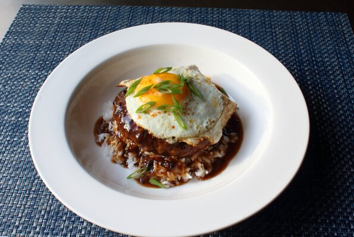

Loco Moco

Description
This amazing Hawaiian comfort food classic is made by topping rice with a fried burger, which is then smothered with a rich,
brown gravy and finished with a fried egg. Seriously, how did it take until 1949 for someone to think of this combination?
We all get hangry sometimes, so whether you're a broke student or an older professional who just wishes you were, this cheap, filling bowl of goodness is
the perfect solution. Garnish with green onions.
Ingredients
- 2 (4 ounce) patties ground beef
- 1 pinch salt and freshly ground black pepper to taste
- 1 pinch cayenne pepper
- 1.5 cups beef stock
- 4 teaspoons soy sauce
- 1 teaspoon Worcestershire sauce
- 2 drops sesame oil, or to taste
- 2 teaspoons ketchup
- 2 teaspoons white sugar (optional)
- 4 teaspoons cornstarch
- 2 teaspoons unsalted butter, divided
- 2 tablespoons minced green onions, white and light green parts only
- 2 eggs
- 2 cups hot cooked white rice
Steps
- Season patties with salt, pepper, and cayenne.
- Whisk beef stock, soy sauce, Worcestershire sauce, sesame oil, ketchup, sugar, and cornstarch together in a bowl.
- Melt butter in a skillet over medium-high heat. Cook patty in the hot skillet until a browned crust forms on the bottom, about
5 minutes. Flip; toss in green onions and cook the other side until both beef and onions are browned, 4 to 5 minutes more. Remove patty and most
of the green onions to a plate.
- Pour beef stock mixture into the skillet. Stir, scraping up browned bits from the bottom, until thickened, about 2 minutes.
Reduce heat to low and reserve gravy until needed.
- Melt remaining butter in another skillet over medium heat. Add eggs to the skillet and fry side by side until whites are set and yolks are still runny
- Divide rice between 2 serving bowls. Place patties over the rice, spoon grav on top, and add the fried eggs.